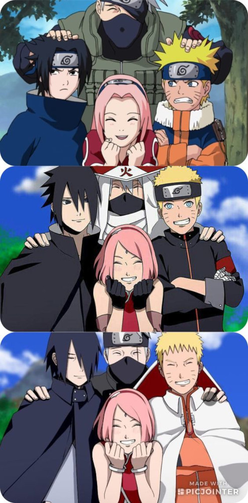
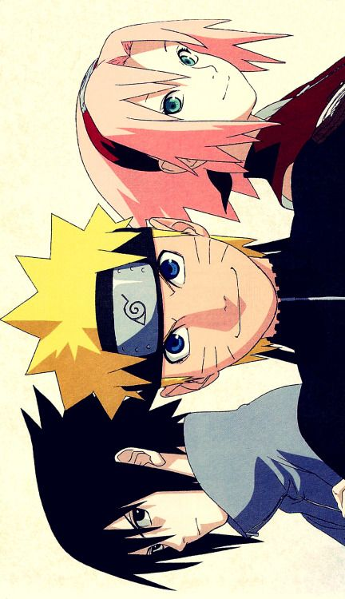
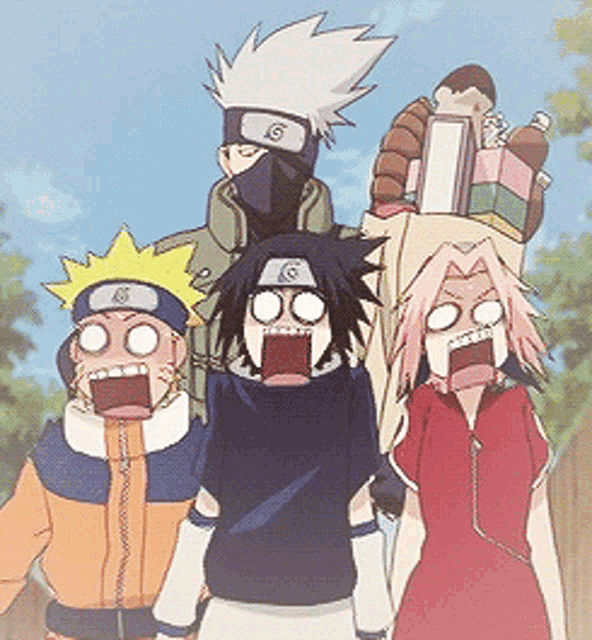
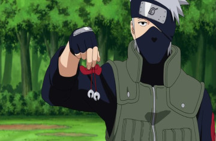
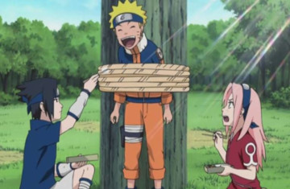
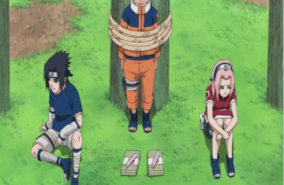

Naruto, Sasuke e Sakura são organizados em uma equipe após a sua graduação na Academia, a fim de equilibrar os seus talentos: Naruto, o pior aluno de sua classe, se beneficiaria da inteligência de Sakura e da proficiência em ninjutsu de Sasuke; Sakura se beneficiaria da capacidade de combate de seus companheiros; Sasuke se beneficiaria aprendendo a trabalhar em equipe. Kakashi é selecionado para treiná-los, a fim de manter um olho em Naruto, o jinchūriki do Nove-Caudas e, no anime, para ajudar Sasuke a lidar com a sua vida após o Massacre do Clã Uchiha. Tal como aconteceu com todas as equipes genin anteriores, Kakashi os encarrega de cumprirem um teste do sino, a fim de determinar se eles dão a devida importância ao trabalho em equipe. Ao contrário de todas as equipes genin anteriores, Naruto, Sasuke e Sakura conseguem passar no teste.

(Equipe Kakashi , e sua evolução , créditos by: Pinterest)
Todas as primeiras missões do Time 7 são classificadas como rank D, as quais Naruto acredita que estão abaixo de suas qualificações. Ele é capaz de pressionar o Terceiro Hokage em lhes dar uma missão rank C: Escoltar Tazuna ao País das Ondas. Depois de iniciar a missão, eles descobrem que Tazuna mentiu sobre os detalhes da missão pois não tinha recursos pra pagar o preço requerido e que a missão é, na verdade, de classificação rank A, muito acima das habilidades de genin. Apesar disso, o Time 7 prossegue com a missão e é capaz de cumpri-la até a sua conclusão. Quando voltam para Konoha, eles retomam suas tarefas servis, missões rank D, mas a partir de seu desempenho, Kakashi acredita que eles estão qualificados para participarem dos Exames Chūnin.

(foto da •Giovana• , via Pinterest)
Apesar do grande desempenho de todos os três, especialmente Naruto e Sasuke, nenhum deles conseguiu tornar-se um chūnin. No anime, eles vão em algumas missões adicionais, mas os acontecimentos durante e após os Exames Chūnin levam Sasuke a acreditar que sua condição de membro da equipe está impedindo-o de alcançar seu objetivo de matar seu irmão, Itachi. Ele deserta de Konoha, unindo forças com Orochimaru. Sakura tenta convencê-lo a não ir, Naruto é incapaz de detê-lo, e pelo tempo que Kakashi descobriu o que Sasuke tinha feito, já era tarde demais. Na sequência, Naruto sai da aldeia para treinar com Jiraiya e Sakura se torna discípula de Tsunade, resultando na dissolução do Time 7.

O verdadeiro significado do Teste do Sino
Kakashi Hatake tornou-se conhecido de várias formas no mundo ninja. Dentre elas, ele era popular por ser um dos sensei mais difíceis pois seu teste do sino já havia reprovada incontáveis ninja. A princípio o teste se consistia basicamente em ter que pegar os sinos de Kakashi. O grande problema era que Kakashi era um Jounin e chegar perto de um ninja daquele nível era complicado demais para Genins.
Além disso, existiam apenas dois sinos para três alunos, o que significava que no final do dia um deles reprovaria enquanto os outros dois passariam caso eles realmente pegassem os sinos. Agora, caso eles não conseguissem pegar os sinos de Kakashi, todos seriam reprovados e mandados de volta para a Academia Ninja. No entanto, o teste do sino de Kakashi Hatake nunca foi realmente fazer com que seus alunos pegassem os sinos.
Em vez de ter que pegar nos sinos, o teste do sino, na verdade, tinha apenas dois propósitos: Trabalho em equipe e conhecer os ninjas da sua equipe.



Como dissemos acima, Kakashi era um ninja de elite e jamais Naruto, Sasuke e Sakura conseguiram pegá-lo caso trabalhassem sozinhos. Isso não aconteceria nem se o inferno congelasse, segundo o próprio Kakashi.Além disso, Kakashi pensou numa forma de deixar um dos três sem comida e proibiu os outros dois de dividirem seus pratos. O objetivo do Kakashi sempre foi fazer com que essa regra fosse desobedecida e que eles realmente dividissem a comida como uma verdadeira equipe.
Kakashi entendia que o trabalho em equipe era crucial no mundo ninja e ele o considerava mais importante do que qualquer coisa. Vale lembrar também que o pai de Kakashi, Sakumo Hatake, escolheu falhar em uma missão apenas para salvar seus amigos. O impacto do fracasso fez com que Sakumo fosse menosprezado por sua aldeia mas, ainda assim, parece um ensinamento que Kakashi decidiu levar adiante.